Newton's second law of motion in the three-dimensional space can be written as the vector equation
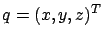
is the vector of coordinates,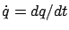
is the velocity vector, and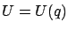
is the potential; consequently,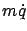
is the momentum and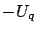
is the force. Note that we are only considering situations where the force is conservative, i.e., corresponds to the negative gradient of some potential function. Planar motion is obtained as a special case by dropping the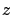
-coordinate.
It turns out that there
is a direct relationship between (2.40) and the Euler-Lagrange
equation. This is difficult to see right now
because the notation in (2.40)
is very different from the one we have been using. So, let us modify our
earlier notation to better match (2.40). First, let us write  instead
of
instead
of  for the independent variable. Second, let us write
instead of
for the independent variable. Second, let us write
instead of  for the dependent variable. Then also
for the dependent variable. Then also  becomes
and we have
becomes
and we have
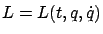
. In the new notation, the Euler-Lagrange equation becomes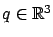
, we are referring to the multiple-degrees-of-freedom version (2.21) of the Euler-Lagrange equation, with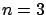
.
Some remarks on the above change of notation
are in order (as it is also a preview of things to come).The change from  to
to  is conceptually significant, because
it implies that the curves are parameterized by time and thus describe
some dynamic behavior (e.g.,
trajectories of a moving object). In problems such as Dido's problem or catenary
problem, where there is no motion with respect to time, this notation would
not be justified.
Other variational problems, such as the brachistochrone problem, do indeed
deal with paths of a moving particle. (We did not, however, explicitly
use time when formulating the brachistochrone problem, and
it would not make sense to just relabel
is conceptually significant, because
it implies that the curves are parameterized by time and thus describe
some dynamic behavior (e.g.,
trajectories of a moving object). In problems such as Dido's problem or catenary
problem, where there is no motion with respect to time, this notation would
not be justified.
Other variational problems, such as the brachistochrone problem, do indeed
deal with paths of a moving particle. (We did not, however, explicitly
use time when formulating the brachistochrone problem, and
it would not make sense to just relabel  as
as
 in our earlier formulation of that problem.
Instead,
we would need to reparameterize the
in our earlier formulation of that problem.
Instead,
we would need to reparameterize the  -trajectories with respect to time,
which yields a different Lagrangian; we will do this
in Section 3.2.)
In mechanics, as well as in control theory, time is
the default independent variable. Accordingly,
when we come to the optimal control part of the book, we will
make this change of notation permanent. For now, we adopt it just temporarily
while we discuss applications of calculus of variations in mechanics. As
for the (time-)dependent
coordinate variables, it is natural
to denote them by
-trajectories with respect to time,
which yields a different Lagrangian; we will do this
in Section 3.2.)
In mechanics, as well as in control theory, time is
the default independent variable. Accordingly,
when we come to the optimal control part of the book, we will
make this change of notation permanent. For now, we adopt it just temporarily
while we discuss applications of calculus of variations in mechanics. As
for the (time-)dependent
coordinate variables, it is natural
to denote them by  and
and  for planar curves
and by
for planar curves
and by  ,
,  and
for spatial curves. In
general, the choice of a label
for the coordinate vector
is just a matter of preference and convention; the mechanics
literature typically favors
or
and
for spatial curves. In
general, the choice of a label
for the coordinate vector
is just a matter of preference and convention; the mechanics
literature typically favors
or
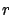
, while in control theory it is customary to use
Let us now compare (2.41) with (2.40). Is
there a choice of the Lagrangian  that would make these two equations
the same? The answer is yes, and the reader will have no difficulty in
seeing that the following Lagrangian does the job:
that would make these two equations
the same? The answer is yes, and the reader will have no difficulty in
seeing that the following Lagrangian does the job:
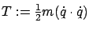
and the potential energy. We conclude that Newton's equations of motion can be recovered from a path optimization problem. This important result is known as Hamilton's principle of least action: Trajectories of mechanical systems are extremals of the functional
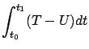
which is called the action integral. In general, these extremals are not necessarily minima. However, they are indeed minima--hence the term ``least action" is accurate--if the time horizon is sufficiently short; this will follow from the second-order sufficient condition for optimality, to be derived in Section 2.6.2.
For example, if the potential is 0, then the trajectories are the extremals of
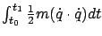
, which are straight lines. We saw in Example 2.2 that straight lines arise as extremals when the Lagrangian is the arclength; the kinetic energy gives the same extremals. In the presence of gravity, the paths along which the action integral is minimized can be viewed as ``straight lines" (shortest paths, or geodesics) in a curved space whose metric is determined by gravitational forces. This view of mechanics forms the basis for Einstein's theory of general relativity.
Observe the difference between the law that the derivative of
the momentum equals the force and the
principle that the action integral is
minimized. The former condition holds pointwise in time, while
the latter is a statement about the entire trajectory. However, their
relation is not surprising, because if the action integral is minimized then
every small piece of the trajectory must also deliver minimal action. In the
limit as the length of the piece approaches 0, we recover the differential
statement. We already discussed this
point in the general context of the Euler-Lagrange
equation (see page ![[*]](crossref.gif) ).
).
Now, what is the physical meaning of the Hamiltonian?
Substituting
for  in (2.28)-(2.29)
and using (2.42), we have
in (2.28)-(2.29)
and using (2.42), we have
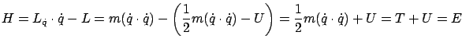
which is the total energy (kinetic plus potential). We see that the Hamiltonian not only enables a convenient rewriting of the Euler-Lagrange equation in the form of the canonical equations (2.30), but also has a very clear mechanical interpretation.
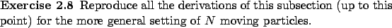
Recall that in Section 2.3.4 we studied two special cases for which we found conserved quantities, i.e., functions that remain constant along extremals. We now revisit these two conservation laws--as well as another related case--in the context of the principle of least action, which permits us to see their physical meaning.
CONSERVATION OF ENERGY. In a conservative system, the potential is fixed and does not change with time. Since the kinetic energy does not explicitly depend on time either, we have
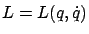
. In other words, the Lagrangian is invariant under time shifting. In our old notation, this corresponds to the ``noCONSERVATION OF MOMENTUM. Suppose that no force is acting on the system (i.e., the system is closed). Since the force is given by
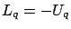
, this implies that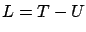
does not explicitly depend on , which means that it is invariant under parallel translations. This situation corresponds to the ``no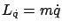
in the present notation, is conserved. A more general statement is that for each coordinate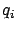
that does not appear in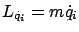
of the momentum is conserved.CONSERVATION OF ANGULAR MOMENTUM. Consider a planar motion in a central field; in polar coordinates
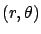
, this is defined by the property that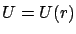
, i.e., the potential depends only on the radius and not on the angle. This means that no torque is acting on the system, making the Lagrangian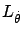
, is conserved. Converting the kinetic energy from Cartesian to polar coordinates, we have
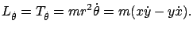
These are familiar expressions for the angular momentum.
We remark that all of the above examples are special instances of a general result known as Noether's theorem, which says that invariance of the action integral under some transformation (e.g., time shift, translation, rotation) implies the existence of a conserved quantity.